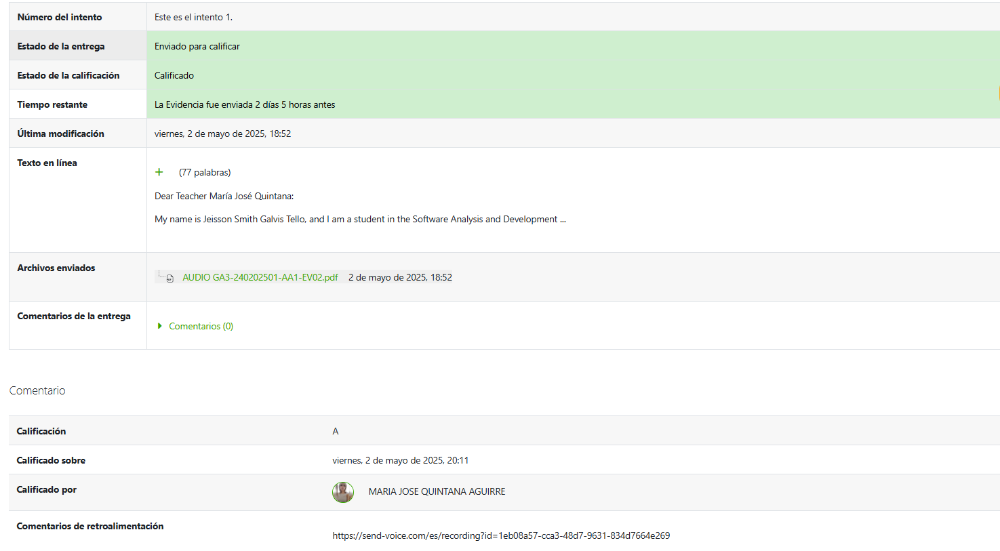

Evidence Description
This audio was recorded as part of an English learning activity where I shared my personal opinion on the qualities and characteristics that a professional in my software development field should possess. Responsibility, adaptability, continuous learning, and teamwork were some of the aspects discussed.
 üéß Listen to Audio on Send Voice← Back to Home